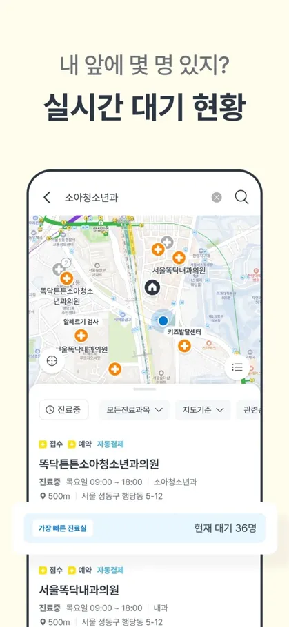
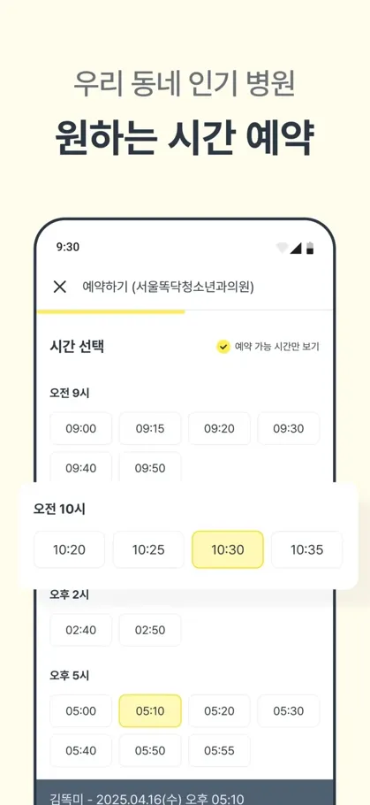
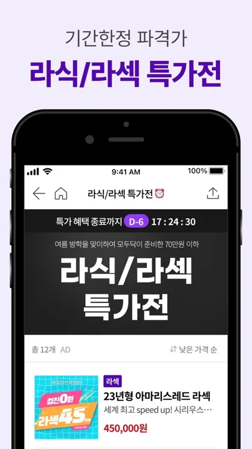
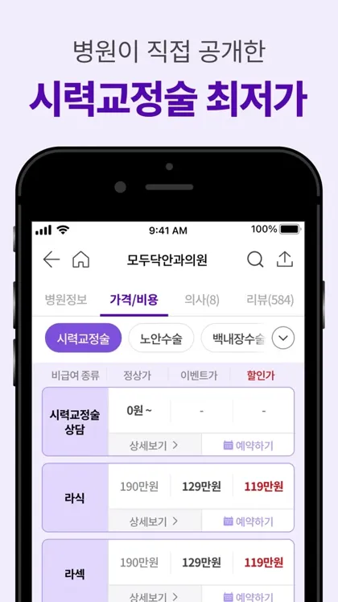
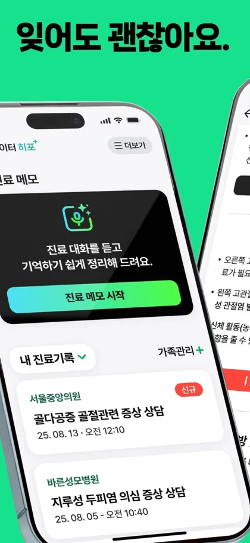
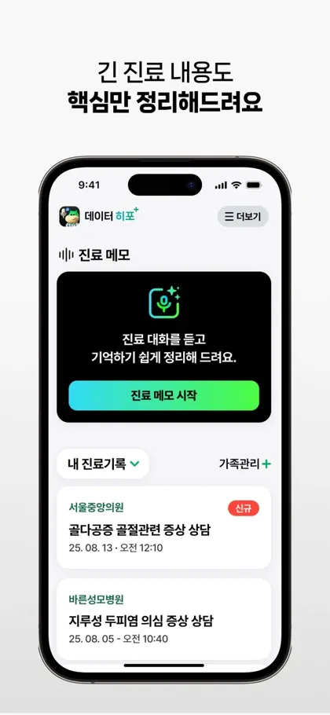
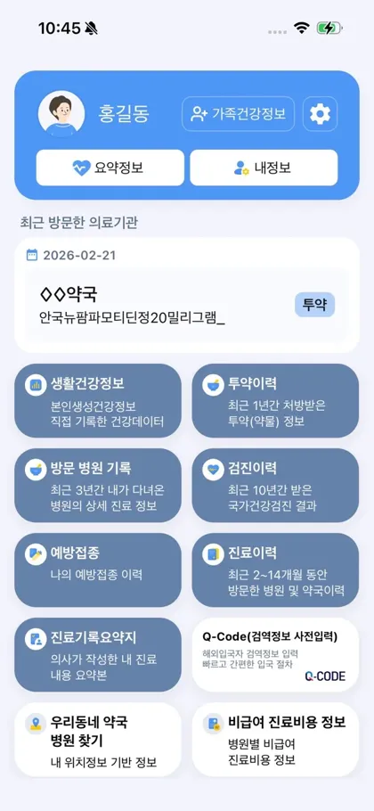
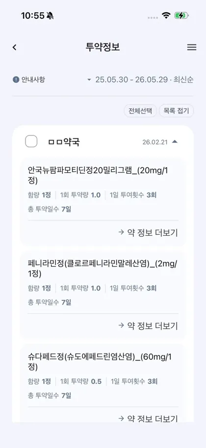
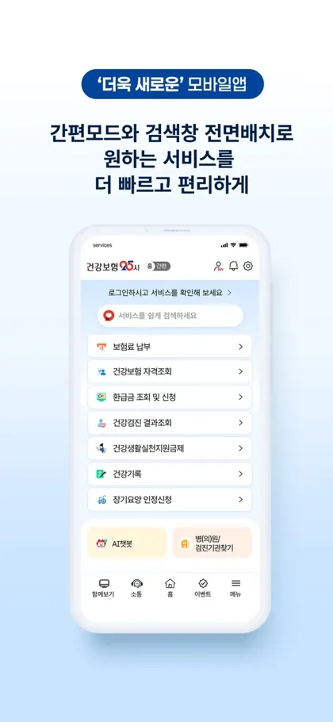
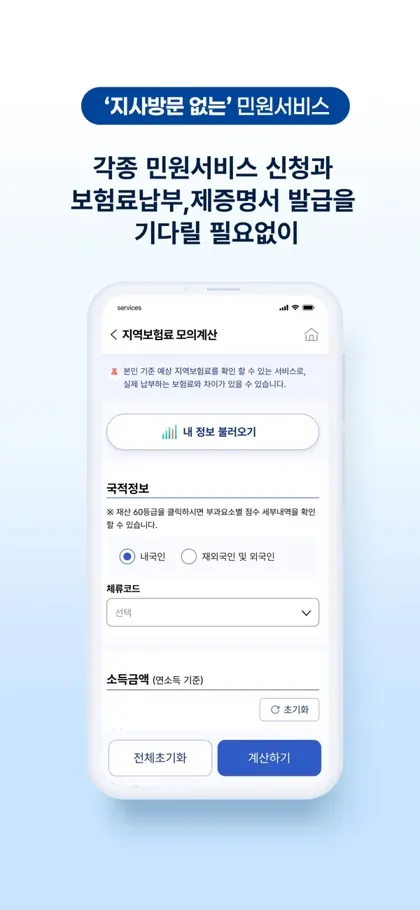

RECAP · 진료 한 장
진료실에서 들은 말을 AI가 쉬운 말로 정리. 의사가 확인한 것만 환자에게 발송.
목 안쪽이 세균에 감염돼 부은 상태
항생제 · 아침, 저녁 · 5일
나아져도 끝까지 복용
물 자주 마시기
3일 뒤 다시 오기
3일 뒤에도 열이 날 때
화면 속 진료 내용은 설명을 위한 예시
01 · 문제
병원은 누구나 자주 가는 곳. 진료 시간은 짧고, 들은 말은 말로만 남음.
한국인 1명이 1년에 받는 외래 진료
OECD 평균 6.6번진찰 시간이 5분에 못 미친 외래 환자
2023 의료서비스경험조사, 14,910명평균 진찰 시간. 접수 후 대기는 17.9분
같은 조사02 · 세 단계
1단계 · 진료 당일
진료가 끝나면 카카오톡으로 알림 도착. 본인 확인 뒤 한 화면짜리 요약 열람.
병 이름, 약 이름, 검사 결과
2단계 · 의사가 정한 날까지
약이 5일분이면 5일 동안, 하루 한 번 한 줄 질문. 답은 버튼 하나.
3일 뒤에도 열이 나면 다시 오기
3단계 · 다른 병원에 갈 때
폰에 쌓인 지난 요약을 새 병원 접수 때 환자가 직접 전달. 병력을 처음부터 다시 설명하지 않아도 됨.
목 안쪽 세균 감염 · 항생제 5일
위염 · 약 2주, 커피 줄이기
발목 인대 늘어남 · 보호대 3주
03 · 하루
시각과 내용은 설명을 위한 예시
04 · 병원 쪽
목 안쪽이 세균에 감염돼 부은 상태
항생제 · 아침, 저녁 · 5일 · 나아져도 끝까지
3일 뒤에도 열이 날 때
의사용 기록과 환자용 한 장이 함께 만들어짐. 새 장비 없음.
그날 진료가 끝날 때까지 누르지 않은 건은 폐기.
검사 결과가 나쁜 날처럼 글로 먼저 받으면 안 되는 진료를 위한 버튼.
무엇을 설명했는지가 날짜와 함께 보관.
05 · 기존 서비스
병원에 가는 순서대로 지금 있는 서비스를 놓아 본 지도. 병원이 환자에게 먼저 보내 주는 칸만 비어 있음.
똑닥굿닥모두닥닥터나우
니어닥 등 AI 차트서울아산병원 음성 기록
데이터히포루닛케어 AI진료노트나의건강기록건강보험25시
RECAP


가기 전
비브로스 · 앱스토어 평점 4.68 (30,495개)
비어 있는 곳진료실에 들어간 뒤의 일은 다루지 않음


가기 전
모두닥 · 앱스토어 평점 4.34 (3,470개)
비어 있는 곳진료 내용을 기록하거나 요약하는 기능 없음


진료 후 · 환자가 직접
히포크랏 랩스 · 앱스토어 평점 4.7 (10개)
비어 있는 곳미리 앱을 깔고 진료실에서 녹음해야 함. 의사 확인 없음. 평가 10개로 이용 초기


진료 후 · 환자가 직접
보건복지부 · 앱스토어 평점 2.8 (112개)
비어 있는 곳약 이름과 방문 기록의 목록. 의사가 한 설명은 없음


진료 후 · 환자가 직접
국민건강보험공단 · 앱스토어 평점 2.1 (3,445개)
비어 있는 곳보험 민원과 기록 조회 중심. 그날 진료 내용은 없음
앱 화면과 평점은 앱스토어 공개 정보(2026년 10월 12일 조회). 앱을 직접 설치해 써 본 결과는 아님. 국내 병원이 AI 요약을 환자에게 자동으로 보내는 사례는 검색에서 찾지 못함
06 · 근거
07 · 한계